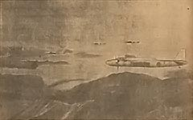

|
j
a v a s c r i p t |
December 24, 1944

Japanese Army Bombers
Tribune: "21 More American Vessels Sunk" — off Mindoro and Leyte from December 20 to 22 by various Japanese air units, but no box score. "Christmas Message from Laurel" — present location unknown. "American Invaders being pushed back in Leyte" — the Japanese are now pushing toward Dulag! "Enemy raiders kill civilians in Balintawak" — 18 B-24's and 16 P-38s dropped bombs from a "high altitude." Nothing about yesterday's P-38 strafing dives. "No ground installations sustained damage." This is precisely the area where Medina told me the Japanese had been hiding planes since the task force raids on December 14 to 16. "All Vehicles Requisitioned by City Government" — Guinto's Military Order No.3. All vehicles plus their drivers — from trucks to bicycles and even horses, carabaos and their accessories, "being of utmost military necessity ... have been requisitioned for the use of Imperial Japanese Forces." This is the sensation of the day. By making it official, the Japanese have given people time to disassemble their vehicles, hide critical parts, and dismantle newly built pushcarts. The order, dated Saturday, gives us 48 hours, 30 of which have already passed. Does the man expect miracles? And where are they going to get the people to move, repair and drive these vehicles? Forced labor! So much for Laurel's Open City. With our remaining means of transportation gone, we'll all starve when the city runs out of food in thirty days. Meanwhile, the remaining Japanese here have been taking materials from private residences to build pillboxes. A couple came into our garden today to haul off Dad's two best pieces of lumber — each worth plenty. They've even taken timber from one of our neighbor's air raid shelter! As I write this, a strong thundershower is flooding most of the pits recently dug for the construction of defensive positions. News: Clark Field bombed — 100 planes destroyed on the ground and 8 to 9 in the air. Twelve massive fires are kicking smoke up to 5,000 feet. |
|
|
|
|